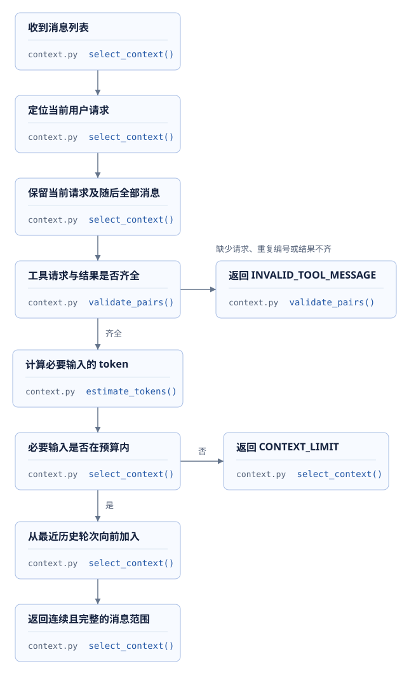
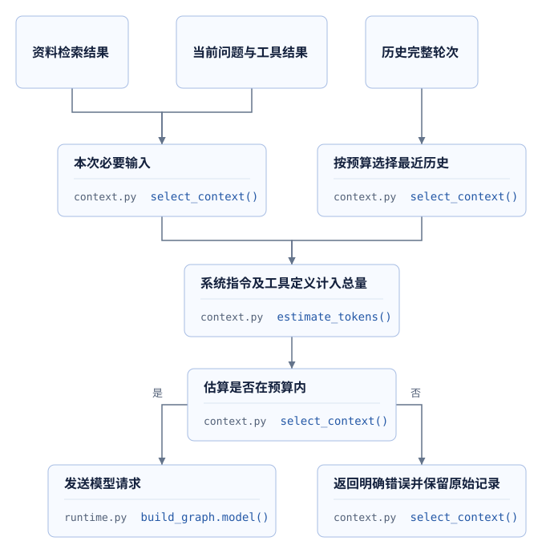
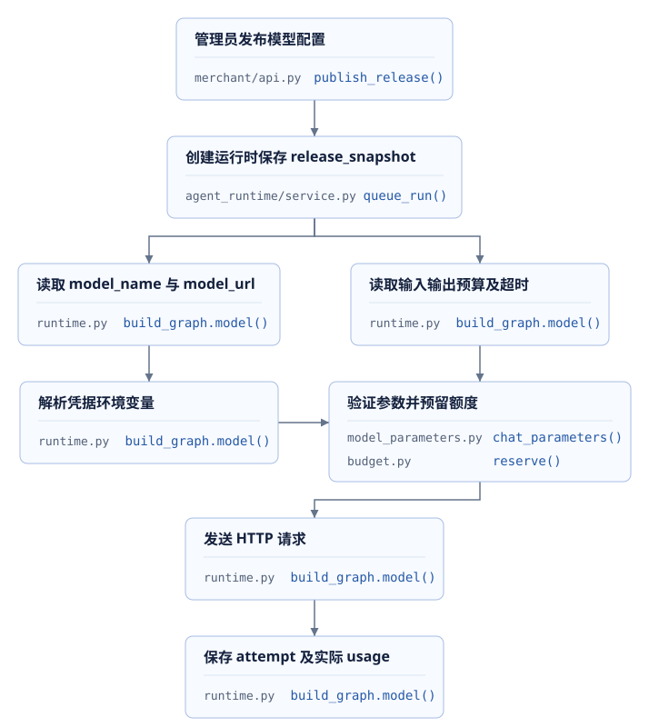
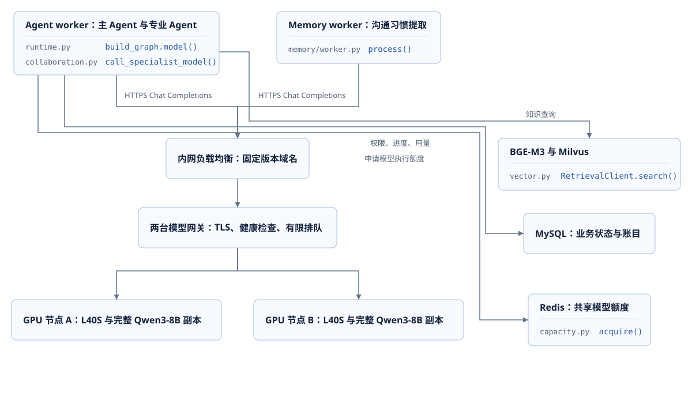
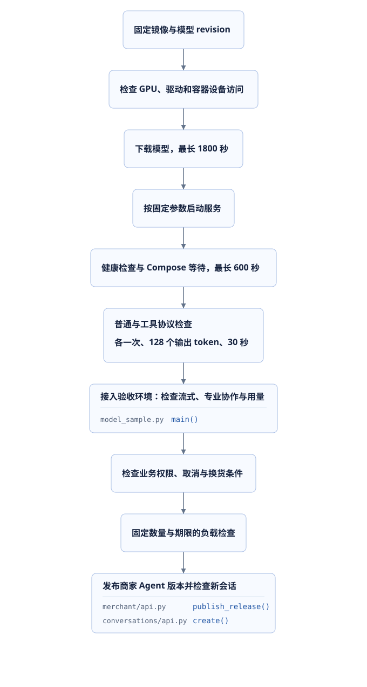
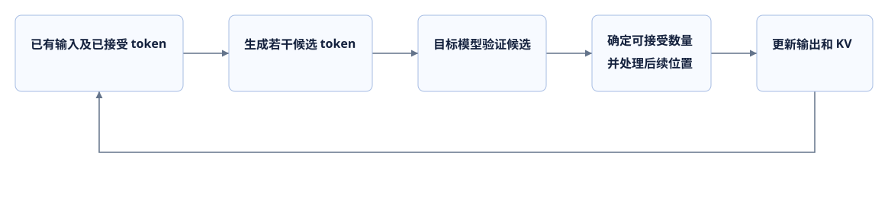
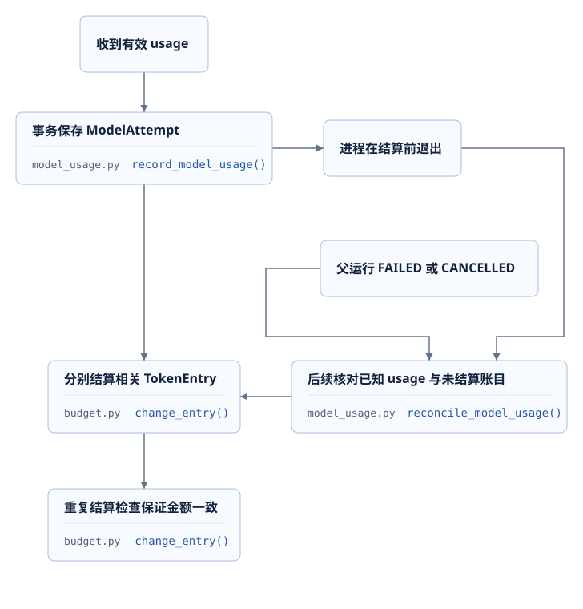
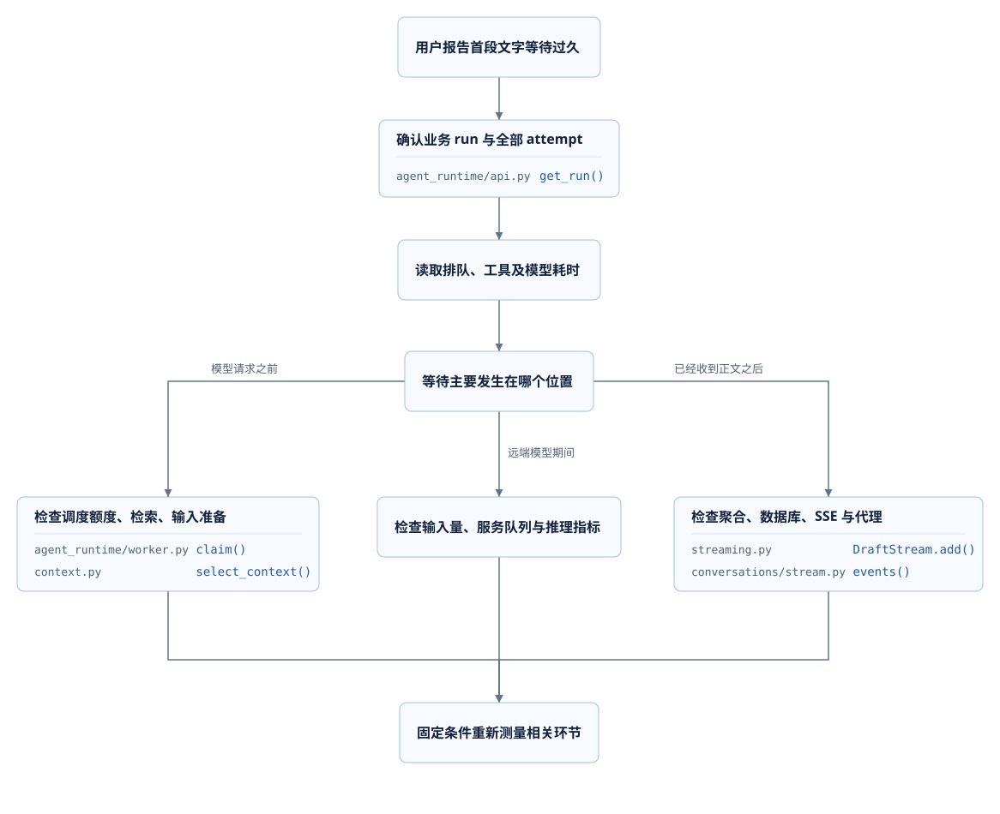

本课目录
订单服务已经返回订单状态，资料搜索也找到了清洁说明。接下来，后端需要把这些结果交给模型，生成客户能够阅读的答复。输入里同时存在系统指令、历史消息、工具定义和工具结果；输出还需要经过权限、版本、费用与会话状态检查。一次模型 HTTP 请求周围的这些工作，决定了长对话能否继续、页面多久出现文字，以及连接中断后能否恢复。
代码阶段06-context-model-performance增加上下文筛选和模型连接复用，07-streaming-response增加正文流式事件及用量恢复。09-course-delivery继续优化用量核对查询与调度。GPU部署与资源计算单独标明条件；现有测量来自本地服务及历史模型样本。
1. 模型请求与响应过程
从工具返回的JSON到模型输入
模型只会读取本次请求携带的内容。数据库保存了十次对话，并不表示供应商自动知道这十次对话；订单工具刚刚返回一个JSON，也需要加入消息列表，才能参与下一次生成。这里的上下文，是本次请求提交给模型的全部输入，包括系统指令、选中的消息以及工具说明。
例如，客户要求“查询键盘订单，并说明清洁方式”。订单工具返回订单编号、商品和当前状态，资料工具返回文档内容及版本。主模型根据这些结果组织答复；如果还需要查询信息，返回的内容也可能包含工具名称和JSON参数。后端据此调用普通业务函数，保存结果，继续发起模型请求。一次客户请求因而可能产生多次模型尝试，每次分别记录ModelAttempt和token账目。
06阶段中，主模型调用前使用下面的代码准备消息。context_start标记当前用户请求的起点，max_context_tokens限制估算输入规模，model_tools提供当前图版本允许使用的工具。
selected = select_context(
messages, instructions=SystemMessage(content=instructions),
tools=model_tools(graph_version), required_from=configuration.get("context_start", 0),
maximum_tokens=configuration.get("max_context_tokens", settings.max_context_tokens),
)源码：06 · runtime.py · build_graph.model。
请求时间与结果状态
普通接口经常只记录请求总耗时。模型流式接口还需要区分首次文字出现和完整答复完成：客户看到第一段文字之后，模型可能仍在生成；后端接收全部内容之后，也可能因资料版本变化而拒绝提交。
| 观察对象 | 起点和终点 | 可以回答的问题 |
|---|---|---|
| 模型尝试 | 发起本次模型调用到返回或终止 | 单次调用占用多少时间和token |
| 服务端首次文字 | DraftStream创建到收到第一份非空正文 |
worker何时收到正文；包含请求准备与网络等影响 |
| 客户端首次草稿 | 客户端开始观察到收到首条正文事件 | 页面等待受到模型、事件聚合、数据库和传输的共同影响 |
| 业务运行 | AgentRun创建到完成、失败、取消或等待 |
一次用户请求经过多少工具与模型调用 |
草稿可以提前展示，正式消息需要完成业务检查。07阶段把草稿保存为agent.output.delta事件，完整答复通过检查后形成message.assistant。模型尝试的用量独立保存，客户取消请求也不会撤销已经发生的模型消耗。
源码：07 · streaming.py · DraftStream、07 · runtime.py · build_graph.model。
2. 上下文筛选与工具消息完整性
工具请求和结果成组保留
工具调用可以理解为模型发来一份函数调用请求：AIMessage.tool_calls包含调用编号、函数名称和参数，后端返回的ToolMessage.tool_call_id指向对应编号。模型依赖这组关系判断哪份JSON回答了哪次查询。
直接保留“最近20条消息”可能恰好从工具结果开始，前面的调用请求已经被省略。另一个风险是只保留两个并行查询中的一个结果。06阶段通过validate_pairs检查编号，并以HumanMessage为完整轮次起点选择历史。

以下连续源码展示结果编号的检查。遇到新消息时，上一组工具请求必须已经收到全部结果；函数结束时也会检查未完成编号。
pending = set()
for message in messages:
if isinstance(message, ToolMessage):
require(message.tool_call_id in pending, "INVALID_TOOL_MESSAGE", "工具结果缺少对应请求")
pending.remove(message.tool_call_id)
else:
require(not pending, "INVALID_TOOL_MESSAGE", "工具请求仍有未返回的结果")
if isinstance(message, AIMessage):
identifiers = [item["id"] for item in message.tool_calls]
require(len(identifiers) == len(set(identifiers)),
"INVALID_TOOL_MESSAGE", "工具请求编号重复")
pending.update(identifiers)
require(not pending, "INVALID_TOOL_MESSAGE", "工具结果尚未齐全")源码：06 · context.py · validate_pairs。
历史消息与本次请求的边界
用户当前要求修改换货方案，随后补充“只更换键盘，不更换鼠标”。两条消息以及期间的工具结果都属于当前运行的重要输入。筛选函数从required_from开始完整保留这部分内容，再尝试加入更早的对话。当前内容超过预算时，调用在登记模型尝试前终止。
for start in reversed(starts):
candidate = messages[start:]
validate_pairs(candidate)
count = estimate_tokens([instructions, *candidate], tools)
if count > maximum_tokens:
break
selected, estimated, boundary = candidate, count, start
return ContextSelection(selected, estimated, boundary)源码：06 · context.py · select_context。
starts来自当前请求之前的用户消息位置，因此选择结果是最近的一段连续完整对话。某轮加入后超额，循环随即结束。它没有根据语义重要性跳过中间轮次，也没有更改数据库中的历史消息。omitted_history_messages记录本次输入省略的消息数量，便于解释不同请求的token变化。
省略历史只改变模型输入，不改变订单事实、用户授权或数据库历史。运行创建时保存context_start与输入上限；每次调用前仍重新验证资料、业务数据和用户记忆版本。07阶段还把相同预算检查用于专业角色：委托输入使用required_from=0，整份委托都需要保留，超额时不会扣除本次模型调用额度。
源码：06 · service.py · queue_run、07 · collaboration.py。
3. 输入预算与历史压缩
输入上限、输出上限与账户预算
这三个上限控制不同对象。输入上限限制系统指令、消息和工具定义的估算规模；输出上限控制单次生成的最大token数量；账户预算限制一段时间内允许消耗的额度。模型服务自身还具有上下文长度限制，输入和可能生成的输出需要共同满足该服务的要求。
| 约束 | 项目中读取的位置 | 超过限制时的行为 |
|---|---|---|
| 输入预算 | release_snapshot.max_context_tokens |
必要内容超额时返回CONTEXT_LIMIT |
| 输出预算 | release_snapshot.max_output_tokens |
编码到模型参数，并用于预算预留 |
| 账户与租户额度 | TokenEntry及预算管理 |
调用前检查和预留，收到usage后结算 |
| 调用次数 | 图版本的max_model_calls与运行计数 |
达到次数后停止继续调用 |
| 服务端模型长度 | 供应商或vLLM模型配置 | 由模型服务检查；平台估算不能代替服务端判断 |
06阶段的估算把消息和工具定义序列化后，用固定cl100k_base tokenizer计数，并增加256个token余量：
payload = {"messages": [message_to_dict(item) for item in messages], "tools": tools}
serialized = json.dumps(payload, ensure_ascii=False)
return len(ENCODING.encode(serialized, disallowed_special=())) + 256源码：06 · context.py · estimate_tokens、06 · budget_callback.py · BudgetCallback。
不同模型的tokenizer和消息编码存在差异，256是项目采用的预留量。估算用于请求筛选，供应商返回的usage用于费用与额度结算。例如，估算输入为8,000、输出上限为1,000时，可以判断是否满足项目的12,000输入预算；能否进入某个最大长度为8,192的模型，还需要按该模型实际tokenizer和输入、输出长度规则验证。
三种减少输入的操作
第三课的检索负责从资料集合找出相关内容。本课的历史筛选负责选择完整对话。业务JSON字段选择可以减少无关数据，例如订单查询只传模型允许读取的商品、数量、状态和版本。三者发生在不同位置，验收也分别检查资料相关性、消息配对和业务字段完整性。

历史摘要则需要生成一份新的内容：从多次对话提取仍然有效的事实。06、07阶段没有实现自动历史摘要。如果扩展这项能力，摘要需要保留订单编号、方案版本、用户确认范围、否定和取消要求；来源消息与生成版本也需要可查询。摘要本身会增加模型调用和用量，源消息变动后需要重新判断摘要是否有效。
例如，历史中先出现“可以换货”，后来出现“暂时取消，等待我确认”。只保存前一句的摘要会改变用户意图。可以把这两条消息作为摘要质量检查的最小样例：输出必须表达当前等待确认状态，并引用对应消息范围。压缩率之外，还需要验证业务事实和工具配对。
练习：输入超额时可省略哪些内容
当前运行包含用户换货要求、一次订单查询、用户补充的商品数量和一次方案查询。历史中还有上周的物流咨询。当前运行本身已经超过输入预算。
参考答案：当前实现返回CONTEXT_LIMIT，不会从当前运行中删除工具结果或用户补充。上周咨询属于可省略历史，但省略之后仍然超额。进一步处理需要调整产生过大输入的工具响应、经过验证的业务字段选择，或者发布适合该输入规模的配置；调整期间保留当前业务版本和授权检查。
4. 模型HTTP连接、超时与并发
连接对象的生命周期
每次HTTP调用都重新创建客户端，会使连接建立和关闭反复发生。06阶段在持续运行的worker中保存ModelClients，同一模型地址和凭据复用客户端。SDK仍按当前调用设置认证信息，传输层没有固定的默认身份头。
identity = hashlib.sha256((base_url + "\0" + credential).encode()).digest()
async with self.lock:
if identity not in self.entries:
if len(self.entries) >= 8:
idle = next((key for key, item in self.entries.items()
if item.active == 0), None)
if idle is None:
raise RuntimeError("当前进程的模型连接身份数量已达到上限")
await self.entries.pop(idle).transport.aclose()
self.entries[identity] = ClientEntry(TransportClients(maximum_connections=4))
entry = self.entries[identity]
self.entries.move_to_end(identity)
entry.active += 1源码：06 · model_clients.py · ModelClients.for_request。
这个缓存最多保存8种地址与凭据组合。需要新组合时，只能清理没有活动请求的旧客户端；全部繁忙则明确报错。每种组合中的同步与异步客户端各自限制4条连接。凭据变化会得到新的组合，已有活动请求继续使用原客户端，结束后才允许清理。
asyncio.Lock保护本进程缓存条目，等待HTTP期间不持续持有这个锁。其他进程拥有各自的客户端与连接池。一个进程的连接上限不能代替整个部署的模型并发限制。账户额度、租户并发、全局并发以及供应商RPM、TPM，需要分别统计。
超时对应的等待范围
主模型调用在数据库事务之外执行，外部请求无需占用业务行锁。asyncio.timeout覆盖本轮异步调用，采用发布配置的模型超时与读取到的运行剩余时间中的较小值；SDK也设置超时，并关闭自动重试。
async with model_clients(clients) as pool, pool.for_request(
model_url, credential,
) as transport, asyncio.timeout(min(configuration["model_timeout"], remaining)):
client = ChatOpenAI(
model=model_name, base_url=model_url, api_key=credential, temperature=0,
timeout=configuration["model_timeout"], max_retries=0,
cache=False, use_responses_api=False,
**chat_parameters(model_url, configuration["max_output_tokens"],
configuration["model_extra_body"]),
http_client=transport.sync, http_async_client=transport.async_client,
)源码：06 · runtime.py · build_graph.model、06 · worker.py · execute_one。
模型超时之外还有worker整次执行期限、运行总期限和执行租约。取消HTTP等待之后，远端是否已经计算或返回usage需要单独处理。调用发生了网络错误，也不能据此认定消耗为零。
2026-09-25的本地连接实验共执行6次健康检查请求，每组3次、并发1、最长30秒：逐次创建客户端使用3条TCP连接，复用客户端使用1条。实验关闭环境代理，生成模型调用为0。这个结果证明该场景的TCP复用；供应商TLS、跨网络延迟以及模型推理速度需要另外测量。
记录：06 · context-model-performance.md。
5. 模型配置与输出预算
配置进入运行快照
管理员发布模型名称、服务地址、凭据环境变量名称、系统指令和预算之后，运行保存所用配置。排队期间管理员发布了新版本，已经创建的运行仍能解释自己采用了哪份设置。凭据本身从环境读取，接口和事件中不需要展示密钥。

源码：06 · service.py · queue_run。
用户配置的extra_body也可能含有输出长度字段。如果顶层限制为512，但扩展JSON再次填入8,192，最终HTTP请求就存在冲突。chat_parameters检查这些字段，要求与受控上限完全相等，再按服务地址编码请求。
body = dict(extra_body)
# SDK 会把 extra_body 合并到最终 JSON，扩展设置不能覆盖平台保存的输出额度。
for name in ("max_tokens", "max_completion_tokens", "max_output_tokens"):
if name in body:
value = body.pop(name)
if type(value) is not int or value != max_output_tokens:
raise ValueError(f"{name} 与模型输出上限冲突")源码：06 · model_parameters.py · chat_parameters。
模型选择的业务检查
更换服务时，接口兼容只覆盖请求格式的一部分。课程中的工具调用还依赖模型生成正确工具名称、完整JSON、调用编号，以及能够处理后续工具结果。输出上限过小，可能使工具参数或答复提前终止；上限增加又会影响预留额度、等待时间和资源计算。
| 检查项 | 沿用的业务样例 | 记录内容 |
|---|---|---|
| 信息选择 | 同时查询订单与清洁资料 | 选择的工具、参数、资料引用是否正确 |
| 权限与意图 | 客户取消或主管接管 | 服务端拒绝旧结果，正式消息没有使用过期状态 |
| 输出完整性 | 包含多字段的换货请求 | JSON可解析，必填字段齐全，结束原因可解释 |
| 等待体验 | 相同长度的输入与输出上限 | 首次文字、完整耗时、失败率 |
| 用量 | 包含全部工具循环和重试 | 每次尝试的输入、缓存输入、输出和账目状态 |
质量检查通过后，性能与费用才具有可比较的业务含义。固定输入、工具定义、输出预算、模型版本和并发条件，才能讨论同一业务的成本差异。temperature=0也不能把跨版本、跨服务的结果当成完全一致。
6. 项目生成服务部署
业务服务与模型服务之间的接口
客户请求“查询订单并咨询商品资料与换货条件”后，Agent worker 查询订单和换货规则、检索商品资料，并请求生成模型整理结果。这里为项目配置独立生成服务：vLLM加载模型、安排计算、管理KV cache，通过Chat Completions返回工具调用、正文和usage。订单权限、换货审批、业务版本和token账目继续由项目后端管理。
主Agent与两个专业Agent共用运行快照中的模型地址、模型名称和凭据变量名称。 生成服务通过AGENT_MODEL_URL接入；第三课的BGE-M3继续通过KNOWLEDGE_INFERENCE_URL提供文本向量，Milvus完成dense、BM25与RRF融合查询。项目已有Compose中的inference运行BGE服务，生成模型另行部署。

部署使用两台Linux amd64服务器，每台一张NVIDIA L40S 48GB、一份完整的Qwen/Qwen3-8B模型。两个副本分别处理请求，每个副本的tensor-parallel-size=1。网关按连接数量分配请求，并检查副本健康状态；一个副本维护时，剩余副本承担当前流量，入口额度按剩余能力控制。
模型与服务固定为同一个发布组合：Qwen revision为b968826d9c46dd6066d109eabc6255188de91218，vLLM版本为v0.11.0，Linux amd64镜像使用固定digest。驱动、容器设备访问与模型加载检查在目标服务器执行。完整镜像标识、模型下载和服务器要求见项目推理服务部署。
从启动参数到验收条件
模型文件以只读目录挂载，权重使用BF16，凭据从部署系统分发的secret文件读取。GPU节点仅开放受控私网端口，业务进程通过网关HTTPS地址访问。两台网关使用相同的TLS与路由配置，生成POST关闭自动重试，持续转发SSE内容。
| 设置 | 项目部署值 | 需要检查的对象 |
|---|---|---|
| 模型服务名称 | zhifu-qwen3-8b-r1 |
请求中的model与服务名称一致 |
max-model-len |
16384 | 每个序列的输入与输出总长度 |
max-num-seqs |
每副本8 | 每次调度允许处理的序列数量 |
max-num-batched-tokens |
4096 | 一次调度中的token处理预算 |
dtype / kv-cache-dtype |
bfloat16 / auto |
权重精度与KV元素的存储格式 |
gpu-memory-utilization |
0.85 | 引擎的设备显存预算比例 |
| prefix caching / chunked prefill | 开启 | 前缀复用与长输入调度 |
| 自动工具选择 / parser | 开启 / hermes |
自动选择工具时解析Qwen3输出 |
generation-config |
vllm |
由服务及请求参数控制生成配置 |
gpu-memory-utilization=0.85描述显存预算比例，GPU计算利用率从运行指标读取。max-num-batched-tokens=4096配合chunked prefill，让长输入分多轮参与调度。每副本8个序列是配置上限，规定延迟下能够承接的请求数量需要通过负载检查确定。 模型权重、KV、临时张量和实际输入长度都参与容量判断。

下载与操作命令保存在项目推理服务部署，包含GPU节点Compose、启动脚本、模型网关、环境参数和检查请求。模型下载最长1800秒，Compose就绪等待最长600秒；普通文本和工具流式协议检查各执行一次，每次最多128个输出token、最长30秒、自动重试为0。/health通过后，继续检查工具名称、JSON参数、调用编号、最终usage和业务权限。
后端配置、发布与业务验收
API、Agent worker、Memory worker和发布检查进程读取同一发布目标的配置。地址示例为https://model-r1.internal.example/v1，模型名称为zhifu-qwen3-8b-r1，AGENT_CREDENTIAL_ENV指向部署系统注入的ZHIFU_INFERENCE_R1_KEY。AGENT_MODEL_EXTRA_BODY使用{"chat_template_kwargs":{"enable_thinking":false}}，单次模型期限30秒，主Agent输出上限1024，专业Agent最多512。
项目AGENT_MAX_CONTEXT_TOKENS=12000使用cl100k_base估算输入；服务端16384限制包含输入和输出。Qwen3的tokenizer及chat template还会影响最终数量，接近上限的请求需要按目标模型检查。主Agent使用astream()接收正文和usage，专业Agent第一轮使用tool_choice="required"，第二轮使用"none"；这些行为都属于接入验收范围。
源码：09 · runtime.py · build_graph.model、09 · collaboration.py · call_specialist_model。
商家读取GET /admin/v1/stores/{store_id}/agent-releases，取得候选摘要并检查发布条件；完成接入回归后，携带业务访问令牌、幂等键、expected_version、candidate_hash、regression_checked和发布原因提交POST。发布记录固定模型地址与名称，新会话引用新版本，已有会话继续使用原版本。 运行创建时复制发布快照，执行时从环境读取凭据值；Memory worker直接使用自身的AgentSettings。
源码：09 · merchant/api.py · publish_release、09 · service.py · queue_run。
发布接口和发布检查只核查生成配置是否齐全。实际请求另外核对max_completion_tokens、自动工具选择、required、none、流式工具参数及usage。启用金额预算的租户还需审批新地址与模型对应价格，否则调用会因BILLING_PRICE_MISSING被拒绝。已有采样脚本按1、2、5次上限分别检查文本流式、订单工具和专业协作，每次最多512个输出token，每项脚本最长180秒；记忆任务与其他业务路径分别登记。
Qwen3-8B在本方案中承担生成服务，业务质量通过订单事实、知识引用、工具调用和权限结果检查。部署记录同时保存revision、服务参数、请求数量、用量、失败结果、TTFT与GPU指标，发布结论使用这些记录限定适用范围。
7. 推理性能与资源计算
首次输出和持续生成
生成请求通常包含两种计算：prefill处理输入并建立KV cache，decode根据已有内容逐步生成新token。请求还可能先在队列等待。输入变长通常会增加输入处理工作，输出变长则会延长持续生成过程。
TTFT通常指请求开始到首次输出token的时间，具体起点必须写入测量记录。后续token间隔描述持续输出是否顺畅。吞吐则需要说明统计对象：输出token/s、全部token/s或请求/s。一个请求更快与一组并发请求总吞吐更高，需要分别观察。
项目DraftStream.ttft_seconds从对象创建到第一份非空正文计时。它包含SDK调用、网络和远端等待等影响，不能直接作为GPU内核耗时。客户端首次草稿还要经过聚合、数据库事件保存和SSE读取，通常具有不同数值。
源码：07 · streaming.py · DraftStream.add。
KV cache与显存容量
KV cache保存注意力计算使用的Key和Value，使后续生成能够使用之前token的计算结果。对于各层结构相同、保存完整K和V的模型，可以进行以下容量练习：
每个token的KV字节数 = 2 × 层数 × KV head数量 × head维度 × 每元素字节数
每个请求的KV字节数 = 每个token的KV字节数 × 当前缓存token数
可用KV容量 = 引擎显存预算 − 权重 − 运行开销 − 预算内保留容量
容量上限 = floor(可用KV容量 / 每个请求的KV字节数)第一组假设采用32层、8个KV head、head维度128、每元素2字节，得到128 KiB/token。4,096 token请求需要512 MiB KV，16个相同长度的请求需要8 GiB KV。
再设设备24 GiB、引擎比例0.85、80亿参数、权重每参数2字节、运行开销2 GiB、预算内保留1 GiB。权重约14.901161 GiB，可用KV约2.498839 GiB。仅按这组显存假设，4,096 token请求可容纳4个，8,192 token请求可容纳2个。
| CPU计算输入 | 每个token的KV | 每个请求的KV | 结果范围 |
|---|---|---|---|
| 32层，4096 token | 128 KiB | 512 MiB | 上述24 GiB假设下容量为4 |
| 32层，8192 token | 128 KiB | 1024 MiB | 相同假设下容量为2 |
| 28层，4096 token | 112 KiB | 448 MiB | 8个请求合计3.5 GiB KV |
第三行使用Qwen3-0.6B作为独立结构计算例：固定配置包含28层、8个KV head和128维度，KV元素按2字节计算，权重规模使用模型名称中的近似值。它与前两组历史假设分别保留，用于检查不同输入条件下的容量公式。第6章Qwen3-8B部署所需的36层结构计算见项目推理服务部署。Qwen3-0.6B固定配置
2026-09-26重新执行这三组CPU计算，输出均为status=ASSUMPTION_CALCULATION、gpu_execution=false。计算命令位于第11章。实际容量还受缓存分页、临时张量、CUDA graph、分配器、并行方式和请求长度分布影响。MLA、滑动窗口和混合层模型需要使用对应结构的公式。
批处理、前缀缓存与量化
多个请求同时等待时，推理服务需要安排有限的计算与显存资源。连续批处理在请求结束后继续接入等待请求；chunked prefill把长输入按调度预算分段处理，V1调度优先安排decode。调整每次调度的token预算，会改变输入处理和持续输出之间的时间分配。KV不足引起的preemption可能增加重新计算，检查时需要同时记录等待队列和延迟。vLLM v0.11.0优化说明
前缀缓存利用相同输入前缀已经计算的KV，例如固定系统指令和工具定义。它主要减少重复输入的prefill计算，后续新token仍需要生成。项目没有实现跨供应商缓存控制器；远端报告的缓存命中token与自己部署vLLM时的前缀缓存，需要按各自服务记录解释。官方前缀缓存说明
量化使用更少位数表示权重或其他数值，可能减少存储与显存需求。权重量化和KV量化改变不同对象；可用格式、GPU支持和计算内核也需要匹配。较小的文件不能直接证明工具调用质量或响应速度，固定业务样例需要重新验证。vLLM v0.11.0量化与设备支持
| 调整对象 | 预期减少的工作或资源 | 同时记录的变化 |
|---|---|---|
| 上下文长度 | 输入处理与KV数量 | 必要业务信息、答案正确率 |
| 输出上限 | 最长生成过程及额度预留 | JSON与正文完整性 |
| 批处理参数 | 多请求调度开销 | TTFT、后续间隔、队列与吞吐 |
| 前缀缓存 | 相同前缀的重复计算 | 命中范围与冷启动结果 |
| 权重或KV量化 | 对应数值的存储容量 | 质量、支持的设备及计算内核 |
| 多GPU或多副本 | 单设备容量或请求承载量 | 通信开销、总费用与请求分布 |
推测解码的计算收益
推测解码由较低成本的过程提出多个候选token，再由目标模型验证。实际接受多少候选，决定一次验证能够前进多少个token。草稿生成和验证都需要时间，也可能占用额外显存。v0.11.0官方文档明确指出收益依赖输入与采样条件，并标明当时与pipeline parallelism不兼容；具体方法还需要核对该版本支持情况。官方推测解码说明

采用一组计算假设：草稿生成4毫秒，目标验证16毫秒，平均有效前进3个token，则有效速度为3 / 0.020 = 150 token/s。普通生成若为8毫秒/token，则为125 token/s，计算比值为1.2。平均前进数量下降或验证成本增加时，这个比值也会变化。
采样与接受算法需要保持目标模型要求的输出分布；数值精度和批次变化仍可能使具体输出不同。业务验收继续检查工具JSON、事实引用和权限处理。这组150与125的数字是公式输入和结果，当前没有推测解码的GPU测量。
多GPU与多个模型副本
tensor parallel把同一层中的张量计算分配到多个GPU，参与该层计算的设备需要交换结果。pipeline parallel按模型层分配设备，请求经过各组层时传递中间结果。它们能够让一个模型副本使用多设备容量，同时增加通信和调度要求。节点间网络、设备连接和模型结构会影响最终收益。官方并行部署说明
独立副本则分别加载完整模型，各自处理分配到的请求。单个模型已经能容纳在设备中、主要压力来自请求数量时，可以分析增加副本的吞吐与费用。请求分配还需考虑排队长度和前缀缓存所在位置；不同副本的缓存不会自动成为同一份缓存。
| 方式 | 分配对象 | 资源与通信 | 需要测量的结果 |
|---|---|---|---|
| tensor parallel | 同一层的张量计算 | 多设备共同持有一个副本，层内需要通信 | 单请求时间、通信占比、可用KV |
| pipeline parallel | 不同模型层 | 按阶段传递中间结果，可能出现设备等待 | 阶段利用率、排队与完整请求时间 |
| 独立副本 | 不同业务请求 | 每份副本占用完整模型及自己的缓存 | 总吞吐、请求分布、缓存命中与总费用 |
项目已有业务worker的并发控制。这里讨论的设备并行与模型副本位于HTTP服务另一端，需要分别配置；增加业务worker不会自动为模型服务增加显存。
vLLM提供/metrics，目标设备验收需使用实际返回的指标名称，记录请求耗时、队列、缓存及吞吐，并与客户端时间配合分析。指标会随版本变化，课程固定版本便于复查。官方metrics说明
8. 正文流式事件
两条不同的流
模型服务向worker发送的是模型响应片段；页面订阅的是项目保存的会话事件。07阶段在两者之间增加DraftStream：只收集正文，按数量或时间聚合，重新检查当前运行后保存事件。浏览器连接中断时，worker仍可以继续执行，已经保存的事件可以重新读取。
主模型从06的ainvoke改为07的astream。LangChain负责合并消息片段，代码传给DraftStream.add的只有chunk.text。工具参数不会作为正文片段发送给客户。专业角色在07阶段仍通过ainvoke返回完整结果，主模型随后汇总。
# 使用 LangChain 合并完整消息；工具参数片段不进入正文事件。
combined = chunk if combined is None else combined + chunk
await draft.add(str(chunk.text))源码：07 · runtime.py · build_graph.model、07 · collaboration.py。
聚合与有界保存
模型可能每次只返回几个字符。每份片段都开事务、保存事件并交给SSE，会增加数据库和网络操作。DraftStream采用四个限制：待发送正文达到1,000个字符时发送；不足时由定时任务等待约0.25秒；每次尝试最多64条事件；累计正文最多65,536个UTF-8字节。
字符数和字节数有不同用途。1,000字符控制通常的事件批次，UTF-8字节限制控制总体数据量。第64条事件留给最终flush，因此最后一条可以超过1,000字符。数据库等待和调度也会影响发送时间，0.25秒不代表客户端必定在250毫秒内看到文字。
# 预留最后一条事件给最终 flush，慢速输出也保持事件总数有界。
while (
len(self._pending) >= self.batch_characters
and self.emitted_events < self.event_limit - 1
):
await self._send_pending(self.batch_characters)
if self._standalone:
return
if self._pending and self.emitted_events < self.event_limit - 1:
self._wake.set()源码：07 · streaming.py · DraftStream.add。
定时任务由异步上下文创建并管理，退出时取消和等待它结束。后台保存失败会记录异常，由add、flush或close继续传播；清理期间的错误不会覆盖调用方已经收到的模型或取消异常。没有会话的独立运行只记录文本指标，不创建会话草稿事件。
源码：07 · streaming.py · DraftStream.aexit、07 · streaming.py · DraftStream.close。
每次保存都检查当前状态
模型生成期间，客户可能撤回授权，客服可能接管会话，资料也可能被更新。_persist_text在短事务中验证执行租约、当前权限、步骤、资料引用和记忆版本。已经被浏览器显示的文字无法通过数据库事务收回，因此事件带有provisional=true，明确表示仍是草稿。
emit(
session,
conversation,
"agent.output.delta",
{
"provisional": True,
"attempt_id": str(UUID(bytes=self.attempt_id)),
"run_id": str(UUID(bytes=run.id)),
"chunk_index": self.emitted_events + 1,
"text": text,
},
run.actor_id,
)源码：07 · streaming.py · DraftStream._persist_text。
正式答复只能使用通过最后一次检查的完整消息。模型最终选择调用工具时，后端发出agent.output.discarded清除本次草稿，再处理工具请求。文本和工具参数都收到完毕，只代表模型响应完成，业务提交仍需通过当前状态验证。
9. SSE续传、取消与正式消息
事件编号与模型尝试编号
SSE接口为GET /openapi/v1/conversations/{conversation_id}/events，使用Bearer认证。事件包含id、event和data：id采用会话事件的sequence，event采用类型，data是完整事件JSON。正文位于payload.text，还有run_id、attempt_id和chunk_index。
| 字段 | 管理范围 | 客户端用途 |
|---|---|---|
sequence / SSE id |
整个会话的持久事件 | 保存已处理位置，重连和去重 |
run_id |
一次业务运行 | 过滤当前请求之外的运行 |
attempt_id |
一次模型尝试 | 新尝试开始时建立新的草稿 |
chunk_index |
同一尝试的正文事件 | 检查草稿片段是否连续 |
control_version |
会话控制权版本 | 服务端过滤旧控制权下的模型事件 |
过滤旧控制权事件后，客户端收到的sequence可以出现间隔。服务端仍会推进读取游标。正文的chunk_index则需要在同一次尝试中连续，否则客户端无法确认当前草稿完整。
cursor = event["sequence"]
if event["type"].startswith("agent.") or event["type"] == "message.assistant":
if event["control_version"] != version:
continue
yield {
"id": str(cursor),
"event": event["type"],
"data": json.dumps(event, ensure_ascii=False),
}源码：07 · stream.py · events.generate。
连接恢复与访问检查
客户端在成功处理事件之后保存编号，重连时通过Last-Event-ID发送。接口只查询大于该编号的事件，每批最多50条；每轮查询重新验证访问权限。游标早于保留窗口返回410 EVENT_CURSOR_EXPIRED，需要重新查询会话状态与历史；游标超过当前序号返回422。
每条连接约50秒后结束，心跳间隔15秒，发送超时5秒。Redis原子检查全局与账户连接数，默认全局200、账户3，超限返回429 SSE_LIMIT并提示60秒后重试。API进程用查询信号量限制并行数据库读取；等待下一轮或等待信号量期间无需长期占用数据库连接。
源码：07 · stream.py · read_events、07 · stream.py · events。
恢复事件连接只负责读取结果，不会创建新的模型运行。页面刷新丢失内存草稿后，需要结合会话状态、正式消息与可用事件恢复显示。课程终端客户端使用httpx-sse解析事件，最多3条连接、总期限150秒；它在同一进程重连时保留草稿和游标。
页面状态与取消
| 收到的事件或情况 | 显示状态与处理 |
|---|---|
agent.model_started |
清除上一尝试未完成草稿，显示正在处理 |
agent.output.delta |
按尝试编号接收并追加正文，保留草稿标记 |
agent.output.discarded |
清除本次草稿，等待工具处理或下一尝试 |
message.assistant |
使用完整正式消息替换草稿 |
run.failed、run.cancelled、control.changed |
清除未完成草稿，按运行或会话状态更新显示 |
access.revoked、stream.expired |
终止当前订阅，重新查询有权访问的会话状态 |
终端客户端采用以下连续代码处理正式答复和草稿清理：
if kind == "message.assistant":
self.text = payload["text"]
self.attempt_id = None
return {"state": "最终答复", "text": self.text}
if kind in {"agent.model_started", "agent.output.discarded", "run.failed",
"run.cancelled", "control.changed"}:
self.attempt_id, self.text, self.chunk_index = None, "", 0
return {"state": "清除未完成草稿", "event": kind}源码：07 · stream_client.py · DraftView.accept。
关闭浏览器的SSE连接只结束这次订阅。取消业务运行需要使用项目取消接口改变运行状态；主管接管也会改变会话控制版本。后续保存和正式提交据此拒绝旧结果。远端模型是否已经计算、是否返回usage仍需独立核对。这里描述的是后端事件协议与终端验证范围，产品页面需要依照这些规则单独完成交互验收。
练习：客户已经看到草稿后，主管接管会话
参考答案：会话控制版本变化后，旧运行不能继续提交新的草稿或正式消息；SSE读取过滤旧控制权的模型事件。客户端收到control.changed清除未完成草稿，重新读取会话状态。已有模型消耗仍记录在对应尝试和账目中。断开连接、取消业务运行、终止远端计算是不同操作，验收分别检查它们的结果。
10. 模型用量与样本费用
已知用量独立保存
一次模型请求已经返回usage，随后可能因为客户取消或资料版本变化而无法提交业务答复。07阶段新增record_model_usage，先保存本次模型尝试的usage，再结算相关账目。重复报告同一尝试时必须具有相同用量；不同内容返回TOKEN_USAGE_CONFLICT。
normalized = Usage.model_validate(usage).model_dump() if usage is not None else None
async with sessions.begin() as session:
attempt = await session.get(ModelAttempt, attempt_id, with_for_update=True)
require(attempt is not None and attempt.tenant_id == tenant_id,
"RESOURCE_NOT_FOUND", "模型尝试不存在", 404)
if attempt.usage is not None:
require(Usage.model_validate(attempt.usage).model_dump() == normalized,
"TOKEN_USAGE_CONFLICT", "重复计量的用量不同")
attempt.status, attempt.usage = "RECEIVED", usage
identifiers = list(await session.scalars(select(TokenEntry.id).where(
TokenEntry.tenant_id == tenant_id, TokenEntry.kind == "agent",
TokenEntry.reference_id == attempt_id,
)))源码：07 · model_usage.py · record_model_usage。
尝试记录与预算账目通过不同短事务完成，以遵守各自加锁顺序。进程在两者之间退出时，后续核对查询可以找到已经保存usage、账目仍未结算的尝试。核对不依赖父运行处于成功状态，FAILED和CANCELLED同样需要处理已知消耗。

| 阶段 | 已有处理 |
|---|---|
| 06 | 模型响应用量独立保存，预算回调负责调用前后额度处理 |
| 07 | 增加record_model_usage与reconcile_model_usage；单次worker执行领取前进行核对 |
| 09 | 从未结算账目关联模型尝试，0031补充索引；持续worker在完成核对后至少间隔30秒，每次核对最长10秒，默认最多100个候选尝试 |
09优化保留07的幂等和取消后结算规则；没有新增无人管理的后台task。单次execute_one仍保留默认核对入口，持续worker通过明确参数统一调度。
源码：07 · model_usage.py · reconcile_model_usage、09 · model_usage.py · model_usage_candidates、09 · model_usage.py · ModelUsageReconciler。
20次历史模型尝试
以下六份记录位于教学代码仓库docs/course/verification/，均使用deepseek-flash。费用分析复用已有样本，新增生成模型调用为0。三个协作样本直接提交协作工具请求，覆盖两个专业角色和主模型汇总；没有测量主模型选择协作工具的准确率。
| 记录 | 尝试数 | 输入token | 输出token | 缓存命中输入 | 整体耗时 |
|---|---|---|---|---|---|
collaboration-model.json |
5 | 4977 | 651 | 640 | 4.098秒 |
collaboration-durable.json |
5 | 5004 | 636 | 2688 | 4.472秒 |
collaboration-context.json |
5 | 5063 | 729 | 1664 | 4.584秒 |
streaming-model.json |
1 | 2422 | 360 | 2176 | 3.101秒 |
streaming-tool-attempt.json |
2 | 5220 | 235 | 4736 | 3.164秒 |
streaming-tool-model.json |
2 | 5208 | 248 | 4736 | 2.924秒 |
| 合计 | 20 | 27894 | 2859 | 16640 | 不合并为单请求耗时 |
streaming-tool-attempt.json的业务验收状态为FAILED，其中两次模型尝试均已收到usage，仍计入消耗。缓存命中输入已经包含在输入token中，计算总量时不能重复相加。全部样本总token为30,753，缓存未命中输入为11,254。
正文流式记录包含7条文本事件和2次SSE连接，服务端首次正文约0.823秒，客户端首次可见草稿约1.741秒，整个检查约3.101秒。这些计时起点和观察位置不同，不能直接相减得到网络耗时。text_chunks=360描述响应片段数量，输出token需读取usage。
三个协作样本与正文流式样本仅保存相对耗时，没有日历起止时间。两个工具流式样本保存了2026-09-25的UTC时间，对应北京时间23:02和23:03。每阶段单个样本、输出长度与缓存条件不同，不能推导P95、长期吞吐、并行加速比或上下文优化收益。
记录及文件指纹：20次真实模型调用的token与费用分析。固定阶段说明：07 · streaming.md。
单价、时间和业务量假设
历史分析采用2026-09-25查询的人民币单价；2026-09-26复查官方页面时，deepseek-flash这三项单价相同。每百万token的缓存命中输入为空闲0.02元、高峰0.04元；未命中输入为空闲1元、高峰2元；输出为空闲4元、高峰8元。DeepSeek官方模型与价格
未命中输入 = input_tokens − cache_read
费用 = (未命中输入 × 未命中单价
+ cache_read × 缓存命中单价
+ output_tokens × 输出单价) / 1000000三个协作样本合计15,044个输入、2,016个输出、4,992个缓存输入，按空闲价格计算为0.01821584元，高峰价格为0.03643168元。两个工具样本时间已知，按空闲价格合计0.00307744元；其余样本保留两个时段的费用范围。全部20次尝试估算为0.02302280—0.04296816元。记录缺少调用时价格快照与账单编号，实际扣费仍需核对账单。
业务量练习只采用三个协作样本平均值。假设每个业务仍使用5次模型尝试，输入、输出和缓存比例保持相同，1,000个业务约需5,000次尝试，费用约6.071947元或12.143893元。每分钟30个同类业务对应150次调用、170,600 token；额外尝试按正常数量的5%估算，对应157.5次调用、179,130 token。规划请求数量时向上取整，并按供应商实际规则分别检查并发和额度。
这些计算保留业务类别、角色数量、摘要调用数量、输入长度和缓存比例等假设。它们不能代替预算扣减、重复结算和权限变更的数据库测试。
11. 本地实验与性能检查
代码阶段和运行环境
源码链接中的06-context-model-performance与07-streaming-response表示固定代码阶段。命令中的06-classroom与07-classroom表示独立教学环境，包括数据库卷、检索集合和运行配置。同一机器的教学端口固定，每次只运行一个环境。启动和切换操作见代码阶段与环境操作。
以下命令在课件项目的project/教学代码目录执行，使用PowerShell 7和已安装依赖、已缓存的本地模型。第三课最后的09-perf-lab已经通过Stop停止；如果结束在其他实验步骤，先使用实际运行的环境名称执行Stop。切换前检查工作区，个人修改保存在个人练习分支，固定教学版本保持不变。
$coursePython = (Resolve-Path '.venv/Scripts/python.exe').Path
$courseModels = (Resolve-Path '.work/models').Path
$courseRecord = '.work/course/l04-' + (Get-Date -Format 'yyyyMMdd-HHmmss')
New-Item -ItemType Directory -Path $courseRecord -Force | Out-Null
git status --short
git switch course/06-context-model-performance
. .\scripts\course\environment.ps1 -Action Start -Stage 06-classroom `
-PythonExecutable $coursePython -ModelCache $courseModels
. .\scripts\course\environment.ps1 -Action Check -Stage 06-classroom
. .\scripts\course\environment.ps1 -Action Use -Stage 06-classroom
$courseRuntime = Get-Content .work/course/06-classroom/runtime.json -Raw | ConvertFrom-JsonStart创建或使用指定环境，并应用当前代码迁移；Use把连接参数载入当前PowerShell进程。已经用于后续迁移的环境需要保留其数据，较早代码选择新的独立环境名称。Python绝对路径从本次环境的runtime.json读取。
实验进程期限与输出
下面的辅助函数为每次Python实验设置外层期限，并在本次独立目录保存标准输出和错误输出。超时只终止它刚启动的进程及子进程，抛出异常并保留记录；进程返回非零状态也终止本组命令。达到期限后的数据清理状态需要按对应测试记录核查，不能登记为通过。
function Invoke-ModelLessonPython {
param([string] $Name, [string[]] $Arguments, [int] $Seconds)
$process = Start-Process -FilePath $courseRuntime.python -ArgumentList $Arguments `
-WindowStyle Hidden -PassThru `
-RedirectStandardOutput "$courseRecord/$Name.stdout.log" `
-RedirectStandardError "$courseRecord/$Name.stderr.log"
if (-not $process.WaitForExit($Seconds * 1000)) {
$process.Kill($true)
$process.WaitForExit()
throw "实验超过 $Seconds 秒期限，请检查日志与清理状态：$Name"
}
$process.WaitForExit()
Get-Content -LiteralPath "$courseRecord/$Name.stdout.log"
if ($process.ExitCode -ne 0) {
Get-Content -LiteralPath "$courseRecord/$Name.stderr.log"
throw "实验失败，请核对原始输出：$Name"
}
}这是本节实验辅助函数，业务Python片段继续引用固定源码。上下文检查外层180秒，连接实验内部30秒、外层60秒。输出文件名称在本次目录中分别保存。
Invoke-ModelLessonPython -Name context -Seconds 180 -Arguments @(
'-m', 'pytest', 'tests/test_course_context.py', '-q', '--tb=short', '--maxfail=1',
"--junitxml=$courseRecord/context.xml"
)
Invoke-ModelLessonPython -Name transport -Seconds 60 -Arguments @(
'scripts/course/transport_experiment.py',
'--health-url', 'http://127.0.0.1:38000/health/live',
'--output', "$courseRecord/transport.json"
)上下文测试验证当前请求、澄清、工具配对、最近完整历史、超额拒绝以及连接对象生命周期。HTTP实验向真实本地健康接口发送两组请求，每组3次、并发1、总期限30秒，自动检查TCP连接数量。两项实验都不发送生成模型请求。
源码：06 · test_course_context.py、06 · transport_experiment.py · main。
流式事件与权限变化
停止06环境后切换到07代码，启动独立的07-classroom。发送器检查外层期限300秒，专业角色输入检查外层120秒；两组输出分别保存。
. .\scripts\course\environment.ps1 -Action Stop -Stage 06-classroom
git status --short
git switch course/07-streaming-response
. .\scripts\course\environment.ps1 -Action Start -Stage 07-classroom `
-PythonExecutable $coursePython -ModelCache $courseModels
. .\scripts\course\environment.ps1 -Action Check -Stage 07-classroom
. .\scripts\course\environment.ps1 -Action Use -Stage 07-classroom
$courseRuntime = Get-Content .work/course/07-classroom/runtime.json -Raw | ConvertFrom-Json
Invoke-ModelLessonPython -Name streaming -Seconds 300 -Arguments @(
'-m', 'pytest', 'tests/test_course_streaming.py', '-q', '--tb=short', '--maxfail=1',
"--junitxml=$courseRecord/streaming.xml"
)
Invoke-ModelLessonPython -Name specialist-context -Seconds 120 -Arguments @(
'-m', 'pytest', 'tests/test_specialist_context.py', '-q', '--tb=short', '--maxfail=1',
"--junitxml=$courseRecord/specialist-context.xml"
)发送器测试通过真实ASGI接口创建会话与运行，在真实MySQL写入事件，把明确文本提交给DraftStream检查聚合和状态变化。专业角色输入测试在超额或配对错误处终止，检查没有新增模型尝试、token账目或调用次数。它们验证代码分支和持久状态，生成模型调用为0。
| 实验变化 | 可检查的数据库或接口结果 |
|---|---|
| 慢速提交少量正文 | 定时提交有序的临时事件 |
| 一次加入较多字符 | 按字符阈值聚合，最后一次发送保留剩余正文 |
| 正文超出UTF-8字节上限 | 返回明确错误，不继续保存超额内容 |
| 客户权限或记忆变化 | 后续正文保存被当前状态检查拒绝 |
| 引用资料版本变化 | 后续事件无法沿用旧来源 |
| 取消任务或发生异常 | 定时任务停止，未发送内容清理，原始异常保留 |
| 已知usage尚未结算 | 核对后完成结算，重复执行不重复扣减 |
源码：07 · test_course_streaming.py、07 · test_specialist_context.py。
2026-09-25历史记录中，发送器与恢复相关的15项检查全部通过，用时49.69秒。该时间包含身份、会话与数据库准备，不代表模型响应时间。真实模型正文及HTTP续传使用第10章的已有记录；本节数据库实验没有新增生成请求。
如需观察已有会话的持久事件，终端客户端读取COURSE_CUSTOMER_TOKEN环境变量，并接收已有conversation_id和run_id。它只订阅事件，最多3次连接、总期限150秒。凭据不写入命令参数或实验结果。
Invoke-ModelLessonPython -Name stream-client -Seconds 180 -Arguments @(
'scripts/course/stream_client.py', '--base-url', 'http://127.0.0.1:38000',
'--conversation-id', $conversationId, '--run-id', $runId
)这里的两个变量来自所观察消息的实际接口响应。已完成历史运行的可用事件范围由服务端保留窗口决定；读取过期游标时按410重新查询会话历史。对已有事件进行订阅不会触发新模型调用。
源码：07 · stream_client.py · main。
CPU容量复算
以下命令在网页课件仓库zhifu-platform-courseware执行，需要可用Python。脚本只计算并输出JSON，不访问GPU和模型服务。
python scripts/gpu_capacity.py
python scripts/gpu_capacity.py --context-tokens 8192
python scripts/gpu_capacity.py --layers 28 --parameters 600000000 --active-requests 8核对assumptions、kv_kib_per_token、kv_mib_per_request、available_kv_gib与memory_only_max_active_requests。默认配置请求16个活跃序列，但按假设计算只能容纳4个，configured_requests_fit_memory_assumptions为false。这展示了配置上限和显存容量之间的区别。
性能检查的观察顺序

项目没有保存供应商全部内部计时，因此无法从本地总耗时直接推导远端排队或GPU计算。自建vLLM可以增加服务端指标，供应商服务则需要结合其可提供的记录。每次记录包含代码版本、输入输出上限、请求数、并发、期限、错误、usage和测量起止位置。
GPU性能验收计划保留在部署材料：每组32次生成、并发分别为1、4、8，输出上限128 token，每组最长180秒，自动重试0，三组合计最多96次。当前均未执行。冷启动、预热、缓存条件和实际设备信息分别记录，质量结果与性能数据一起保存。
12. 课后作业与评分
作业：等待时间、草稿状态与计算预算
业务情景：客户在长对话中请求查询订单和清洁资料，等待期间客服接管会话。提交一份能同时解释模型输入、响应展示和费用记录的工程分析，包含以下四项产物。
- 在06代码中定位当前请求边界、工具消息配对、token估算和模型HTTP生命周期。构造包含历史轮次、当前澄清及工具结果的输入，记录筛选前后消息数量与完整性检查结果。
- 在07代码中沿
attempt_id追踪草稿事件和正式消息，完成一次真实数据库的权限或版本变更实验，记录变化前后事件数量、错误码、运行状态和账目状态。直接输入发送器的文本需标明测试范围。 - 使用六份历史模型JSON复算输入、输出、缓存命中与费用，计入失败样本；说明哪些样本只能计算价格范围。复算两种上下文长度的KV容量，保留全部假设。
- 编写一份目标GPU实验记录表，列出固定模型版本、请求数、并发、输出上限、期限、质量检查、TTFT与吞吐定义。未执行的项目保留“未执行”，并说明需要哪些记录才能判断优化效果。
提交结果需要把真实接口测试、历史模型样本和容量假设计算分别标明。已有样本足够完成本次费用作业，新增生成模型调用数量可以保持为0。
| 评分项 | 分值 | 完成条件 |
|---|---|---|
| 上下文与预算 | 25 | 当前请求完整、工具配对有效，能区分估算、输出上限和实际usage |
| 流式状态正确性 | 30 | 区分运行、尝试、事件序号；包含取消或接管后的数据库结果与草稿处理 |
| 费用与容量计算 | 25 | 缓存输入没有重复计数，失败尝试计入，KV公式与设备假设可复算 |
| 性能实验设计 | 20 | 统计范围明确，具有请求和时间上限，保留质量与错误，准确标注GPU执行状态 |
参考答案：长对话、接管与已发生用量
queue_run保存当前用户请求的context_start。select_context保留从该位置开始的全部必要消息，按最近完整历史轮次逐步增加输入；工具请求与结果必须配对。必要内容超额时在模型尝试登记前拒绝，不能仅删除其中一份订单结果。
HTTP等待发生在业务事务之外，连接对象按进程中的服务地址和凭据复用。模型返回正文进入DraftStream，每次保存都检查当前租约、权限、步骤、来源和记忆版本。客服接管改变会话控制版本并取消旧活动运行，后续草稿与正式消息提交受到检查。客户端收到控制变化后清除临时内容。
record_model_usage独立保存已知消耗。父运行取消之后，已知usage仍可参与未结算账目核对；重复处理必须保持相同计量。关闭SSE连接不会代替业务取消，也不能据此认定远端没有计算。
全部样本输入27,894、输出2,859、缓存命中16,640、缓存未命中11,254，总token30,753。已知时段的两个工具样本按空闲价格计算，其余样本保留两档费用范围，合计0.02302280—0.04296816元。实际账单扣费缺少完整记录，不能填写为已经验证的金额。
参考答案：性能变化与面试说明
可以围绕一个具体观察展开说明：“本地6次健康请求的实验中，逐次创建客户端产生3条TCP连接，复用客户端产生1条；实验没有调用生成模型，因此结论限定为这组HTTP连接行为。”解释代码使用的地址与凭据分组、活动请求计数和关闭条件，再说明供应商网络与推理耗时需要独立测量。
GPU容量题中，32层、8个KV head、128维、2字节得到128 KiB/token。4,096 token请求为512 MiB，8,192 token请求为1,024 MiB。指定24 GiB设备等假设后，可用KV约2.498839 GiB，对应容量4与2。该结果无法给出真实TTFT或吞吐。
目标设备实验需要固定模型、输入、采样设置和输出上限，分别观察冷启动与预热后的队列、TTFT、后续间隔、总耗时、错误率、吞吐和显存。增加批处理并发、启用量化或推测解码后，质量样例也需要重新检查。相同统计条件下的完整记录才能支持性能结论。